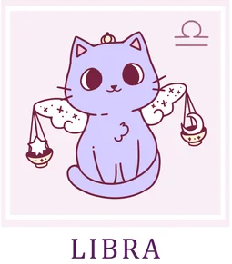

Весы/Libra
Наступающий год — это гармоничное и стабильное время, лишенное резких потрясений и неожиданных поворотов. Не
стоит ждать, что жизнь круто переменится в одночасье — глобальных перемен не предвидится. Возможны лишь
незначительные колебания, но волноваться из-за них не стоит. Впрочем, и строить воздушные замки, ожидая подарков
судьбы, тоже не спешите. Ваша задача — сохранять внутреннее равновесие: спокойно обдумывать планы, так же
спокойно пересматривать приоритеты, взвешенно решая, что вам действительно нужно, а без чего можно обойтись.
Все, что вам предначертано, постепенно воплотится в жизнь, но не само собой, а благодаря вашим разумным и
последовательным усилиям.
Зима пройдет на удивление спокойно, но в марте придется поволноваться. Основные тревоги будут связаны с денежными
вопросами и работой. В деловой сфере может наступить полоса неразберихи, и только ваша врожденная
дипломатичность и мудрость помогут преодолеть трудности. В это время как никогда пригодится умение общаться с
самыми разными людьми и получать из бесед ценную информацию. Помните: предупрежден — значит вооружен. Даже
мимолетные сплетни могут оказаться полезными, если вы сумеете отсеять шелуху и извлечь из них здравое зерно.
Однако уже с апреля напряжение сменится долгожданным облегчением. Период с конца весны и до самого конца лета —
пора радости и легкого отношения к жизни. Можно влюбляться, путешествовать с друзьями и наслаждаться каждым
днем. В свободное время отдавайте предпочтение активному отдыху на природе — это поддержит и здоровье, и
прекрасное настроение. Чем больше новых впечатлений вы соберете, тем лучше: они станут источником вдохновения и
натолкнут на множество интересных идей.
С осени в спокойное течение жизни можно начинать вносить коррективы. Обстоятельства складываются благоприятно, и
для изменений не потребуется больших усилий. Доверьтесь интуиции и действуйте так, как подсказывает внутренний
голос. Именно в этот период возможны судьбоносные романтические встречи. Вам даже не придется прилагать особых
усилий — второй человек проявит всю инициативу, и события могут развиваться стремительно, вплоть до серьезных
решений о браке.
В декабре ваша интуиция будет чрезвычайно острой. Этот месяц принесет долгожданные ответы на многие вопросы,
которые долго вас тревожили. Вы не только сможете разобраться в текущей ситуации, но и с удивительной точностью
почувствуете, как будут развиваться события в будущем. Прислушивайтесь к себе — ваше внутреннее «я» станет самым
надежным проводником.